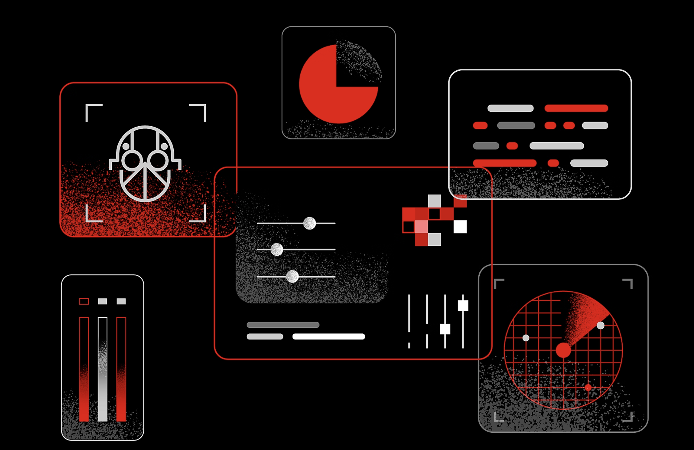

IS HE FINISHED??
One bad season. One failed project. One public mistake. One injury. One silent month. Suddenly the world asks: “Is he finished?”
Read More...One bad season. One failed project. One public mistake. One injury. One silent month. Suddenly the world asks: “Is he finished?”
Read More...Dark and deep web has always been a topic of mystery and fear. As complicated as it sound the dark web runs very simply. Over the years we have developed some misconceptions about dark web and deep web. Today I will attempt to debunk those myths for you. Please watch it till the end to get a clear picture.
Read More...
These in-depth reviews evaluate how security controls behave in production to identify the threats they see, block, and miss.
Read more